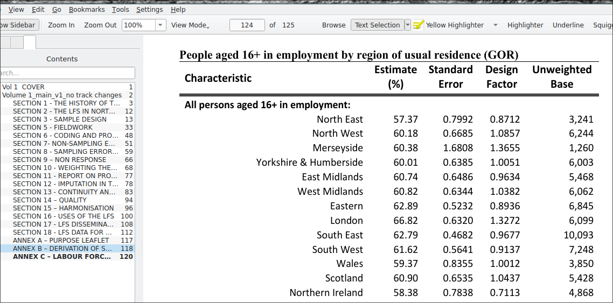

The R Survey package (Lumley 2023) provides a comprehensive set of functions for computing point and variance estimates from survey data. At the same time, R Base does not provide a unified sets of commands or syntax for computing weighted estimates. Implementation of statistical theory may vary between packages, but algorithms are usually described in detail in the package documentation.
In this example, we will practice statistical inference with data from the 2017 British Social Attitudes Survey (BSA) taking into account weights and survey design variables. Please note that at the time of writing this document only some issues of the BSA include survey design variables.
5.1 Identifying the survey design and variables
We first need to find out about the survey design that was used in the 2017 BSA, and the design variables that are made available in the dataset. Such information can usually be found in the documentation that comes together with the data under the mrdoc/pdf folder.
Question 1 What is the design that was used in this survey (i.e. how many stages were there, and what were the units sampled). What were the primary sampling units; the strata (if relevant)?
Now that we are a bit more familiar with the way the survey was designed, we need to try and identify the design variables we can include when producing estimates. The information can usually be found in the user manual or the data dictionary available under mrdoc/ukda_data_dictionaries.zip The file may need to be decompressed separately.
Question 2 What survey design variables are available? Are there any ones that are missing – if so which ones? What is the name of the weights variables?
## Specifying the survey design
rm(list=ls())library(dplyr) ### Data manipulation functionslibrary(haven) ### Importing stata/SPSS fileslibrary(Hmisc) ### Extra statistical functionslibrary(survey) ### Survey design functionslibrary(kableExtra) ### Survey design functionssetwd("~/OneDrive/DSP/SSP/DSP-core-inference") ### Edit as appropriatedatadir<-"~/Data/"### Edit as appropriate#datadir<-"~/Dropbox/work/UKDS/data/" ### Edit as appropriatebsa17<-read_spss(paste0(datadir,"bsa/UKDA-8450-spss/spss/spss25/bsa2017_for_ukda.sav"))dim(bsa17)
[1] 3988 580
We can specify the survey design earlier identified in the data documentation: using Spoint as Primary Sampling Unit, StratID as strata, and WtFactor as weights. R does this by creating a svydesign object, i.e. a survey design informed version of the data, which will be used for subsequent estimation.
[1] "survey.design2" "survey.design"
5.2 Mean age and its 95% confidence interval
We can now produce a first set of estimates using this information and compare them with those we would have got without accounting for the survey design. We will compute the average (i.e. mean) age of respondents in the sample. We will need to use svymean()
mean SE
RAgeE 48.313 0.4236
By default svymean() computes the standard error of the mean. We need to
embed it within confint() in order to get a confidence interval.
2.5 % 97.5 %
RAgeE 47.48289 49.1433
RAgeE
48.3 47.5 49.1
Question 3 What would be the consequences of weighing but not accounting for the sample design; not using weights and accounting for the sample design when:
inferring the mean value of the population age?
inferring the uncertainty of our estimate of the population age?
## Computing a proportion and its 95% confidence interval
We can now similarly compute the distribution of a categorical variable in the population by estimating proportions (or percentages), for instance, the proportion of people who declare that they are interested in politics. This is the Politics variable in the BSA. It has five categories ranging from 1 ‘A great deal’ to 5- ‘Not at all’. We could recode 1 and 2 - quite a lot into ‘Significantly’, but since we are only interested in estimating the confidence intervals, we will select the relevant values ‘on the go’.
[1] "How much interest do you have in politics?"
skip, version off route Item not applicable ... a great deal,
-2 -1 1
quite a lot, some, not very much,
2 3 4
or, none at all? Don`t know Refusal
5 8 9
skip, version off route Item not applicable ... a great deal,
0 0 739
quite a lot, some, not very much,
982 1179 708
or, none at all? Don`t know Refusal
379 1 0
Note: Changes in a data frame are not automatically transferred into svydesign objects used for inferences. We therefore need to recreate it each time we create or recode a variable.
Politics == 1 | Politics == 2
FALSE TRUE
57 43
Let us now compute the confidence intervals for these proportions. Traditional statistical software compute these without giving us an idea of the underlying computations going on. Doing this in R requires more coding, but also a better understanding of what is actually estimated.
Confidence intervals for proportions of categorical variables are usually computed as a sequence of binomial/dichotomic estimations – i.e. one for each category. In R this needs to be specified explicitly via the svyciprop() and I() functions. The former actually computes the proportion and its confidence interval (by default 95%), whereas the latter allows us to define the category we are focusing on.
Question 4 What is the proportion of respondents aged 17-34 in the sample, as well as its 95% confidence interval? You can use RAgecat5
5.3 Computing domain estimates
Computing domain estimates, that is estimates for subgroups adds a layer of complexity to the above example. They key point is that as weights are usually designed using the whole of the sample by data producers, confidence intervals or standard errors computed using only part of the sample may be unreliable, as they will rely on some of the weights only. Instead, it is recommended to use commands that take into account the entire distribution of the weights.
In R, the command that does this is svyby()
For instance, if we would like to compute the mean age of BSA respondents by Government Office Regions, we need to specify:
The outcome variable whose estimate we want to compute: i.e. RAgeE
The grouping variable(s) GOR_ID
The estimate function we are going to use here: svymean, the same as we used before
And the type of type of variance estimation we would like to see displayed i.e. standard errors or confidence interval
RAgeE ci_l ci_u
A North East 46.1 43.6 48.6
B North West 49.6 47.3 52.0
D Yorkshire and The Humber 48.0 45.2 50.8
E East Midlands 48.6 45.9 51.3
F West Midlands 48.1 45.0 51.2
G East of England 49.0 46.0 52.0
H London 45.0 43.0 46.9
J South East 48.0 45.1 50.8
K South West 53.4 51.5 55.2
L Wales 49.1 45.1 53.1
M Scotland 47.3 44.7 50.0
Note: we used [-1] from the object created by svyby() in order to remove a column with alphanumeric values (the region names), so that we could round the results without getting an error.
Our inference seem to suggest that the population in London is among the youngest in the country, and that those in the South West are among the oldest – their respective 95% confidence intervals do not overlap. We should not feel so confident about differences between London and the South East for example, as the CIs partially overlap.
We can follow a similar approach with proportions: we just need to specify the category of the variable we are interested in as an outcome, for instance respondents who are significantly interested in politics, and replace svymean by svyciprop.
I(Politics == 1 | Politics == 2) ci_l ci_u
A North East 33.4 26.6 40.9
B North West 41.9 36.1 48.0
D Yorkshire and The Humber 35.6 29.1 42.6
E East Midlands 36.9 32.9 41.1
F West Midlands 36.3 31.5 41.5
G East of England 47.2 41.4 53.1
H London 54.2 47.2 61.1
J South East 44.6 38.7 50.8
K South West 46.5 39.4 53.8
L Wales 38.6 27.7 50.7
M Scotland 42.7 36.0 49.8
Question 5 What is the 95% confidence interval for the proportion of people interested in politics in the South West? Is the proportion likely to be different in London? In what way? What is the region of the UK for which the precision of the estimates is likely to be the smallest?
Question 6 Using interest in politics as before, and three category age RAgecat5:
Produce a table of results showing the proportion of respondents significantly interested in Politics by age group and gender
Assess whether the age difference in interest for politics is similar for each gender?
Based on the data, is it fair to say that men aged under 35 tend to be more likely to declare themselves interested in politics than women aged 55 and above?
## Inference without survey design variables using R
Example: count and proportion of the regional population of the UK using the LFS with End User License (EUL)
As a rule, EUL versions of the LFS do not include sample design variables. On the other hand they come with two weight variables:
pwt22 for estimation with the whole sample
piwt22 for estimation of income using respondents currently in employment (and accounting for the high level of non response for the earnings variables)
Estimation without accounting for sample design will likely be biased and should be reported as such including warnings, even if the nature (over or underestimation of the precision) and and size are not known. An alternative is to look for design effects tables published by the data producer which could be used to correct for the bias.
The Office for National Statistics regularly publishes such tables for the LFS, albeit mostly for their headline statistics. Obtaining further design effects for subpopulations might not be straighforward. The overall methodology is described in this note, and updated tables are provided on this page.
Let’s see how this can be achieved. But first, let’s produce uncorrected ‘naive’ estimates of the regional population.
2.5 % 97.5 %
uresmc.fTyne & Wear 375843 544677
uresmc.fRest of Northern region 679067 875001
uresmc.fSouth Yorkshire 361987 542893
uresmc.fWest Yorkshire 892298 1139996
uresmc.fRest of Yorks & Humberside 688398 901578
uresmc.fEast Midlands 1884931 2240257
uresmc.fEast Anglia 1018147 1293525
uresmc.fInner London 1403277 1950147
uresmc.fOuter London 2061142 2573440
uresmc.fRest of South East 5133587 5816347
uresmc.fSouth West 2150551 2532611
uresmc.fWest Midlands (met county) 921916 1255744
uresmc.fRest of West Midlands 1249939 1571219
uresmc.fGreater Manchester 1041396 1341426
uresmc.fMerseyside 473854 749424
uresmc.fRest of North West 929920 1205848
uresmc.fWales 1101246 1410746
uresmc.fStrathclyde 722247 1020673
uresmc.fRest of Scotland 1356361 1750183
uresmc.fNorthern Ireland 689076 803340
In the above example, we are working with the most commonly used flavour of the Labour Force Survey: the quarterly edition. The specific dataset used above is the April-July 2022 issue. Looking at the latest version of the documentation mentioned above - Volume 1, Annex C, we can see a list of design effects for the number of employed respondents by Region of Usual Residence.

LFS design factors
We can see that for some reason, the number of regions has been reduced from the original 16 to 13. We therefore need to recode our original variable.
For convenience, reorder the factor levels in order to match the ONS ordering:
Let us now check the results:
2.5 % 97.5 %
uresmc.fnNorth East 1108265 1366323
uresmc.fnNorth West 2056142 2462448
uresmc.fnMerseyside 473854 749424
uresmc.fnYorkshire & Humberside 2077728 2449422
uresmc.fnEast Midlands 1884931 2240257
uresmc.fnWest Midlands 2268450 2730368
uresmc.fnEast Anglia 1018147 1293525
uresmc.fnLondon 3620425 4367581
uresmc.fnRest of South East 5133587 5816347
uresmc.fnSouth West 2150551 2532611
uresmc.fnWales 1101246 1410746
uresmc.fnScotland 2178250 2671214
uresmc.fnNorthern Ireland 689076 803340
We can now import the design factors from the LFS documentation. This has to be done by hand, by directly copying the relevant numbers from the LFS.
While we are at it we can also improve the original table:
2.5%
97.5%
North East
1124882
1349706
North West
2038728
2479862
Merseyside
423490
799788
Yorkshire & Humberside
2076776
2450374
East Midlands
1891430
2233758
West Midlands
2259623
2739195
East Anglia
1032794
1278878
London
3498181
4489825
Rest of South East
5144607
5805327
South West
2167034
2516128
Wales
1101057
1410935
Scotland
2167474
2681990
Northern Ireland
705569
786847
5.3.1 Answers
Question 1 The 2017 BSA is a three stage stratified random survey, with postcode sectors, adresses and individuals as the units selected at each stage. Primary sampling units were stratified according to geographies (sub regions), population density, and proportion of owner-occupiers. Sampling rate was proportional to the size of postcode sectors (i.e. number of addresses).
Question 2 From the Data Dictionary it appears that the primary sampling units (sub regions) are identified by Spoint and the strata by StratID. The weights variable is WtFactor. Addresses are not provided but could be approximated with a household identifier.
Question 3 Not using weights would make us overestimate the mean age in the population (of those aged 16+) by about 4 years. This is likely to be due to the fact that older respondents are more likely to take part to surveys. Using survey design variables does not alter the value of the estimated population mean. However, not accounting for it would lead us to overestimate the precision/underestimate the uncertainty of our estimate with a narrower confidence interval – by about plus or minus 3 months.
Question 4 The proportion of 17-34 year old in the sample is 28.5 and its 95% confidence interval 26.5, 30.6
Question 5 The 95% confidence interval for the proportion of people interested in politics in the South West is 39.8-53.4. By contrast, it is 47.6-60.8 in London. The region with the lowest precision of estimates (i.e. the widest confidence interval) is Wales, with a 20 percentage point difference between the upper and lower bounds of the confidence interval.
Older respondents both male and female tend to be more involved in politics than younger ones.
The confidence interval for the proportion of men under 35 and women above 55 interested in politics overlaps; it is unlikely that they differ in the population.
Blair, Johnny. 2014. Designing Surveys : A Guide to Decisions and Procedures. 3rd edition / Johnny Blair, Ronald F. Czaja, Edward A. Blair. Los Angeles: SAGE.